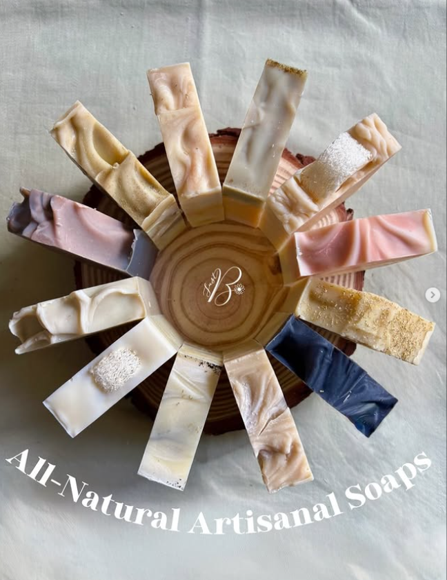

Handcrafted in Gatineau, Québec
Odds n Ends

Perfectly good artisan soap in little offcuts and irregular pieces. Zero waste, zero fuss.
Ingredients
May contain: Saponified fats: olive (also calendula- or chamomile-infused), coconut, castor, sweet almond, jojoba, shea, mango, grass-fed tallow. Mango and shea butters; water; coconut and almond milks; 10% cream; honey; colloidal and decorative oats; sugar; pumpkin purée; banana; espresso and coffee grounds; chai tea; maple syrup; aloe vera juice; Himalayan salt; loofah; activated charcoal; clays: kaolin, French green and pink, Brazilian purple, purple, pink, yellow, French; powders: matcha, cocoa, indigo, turmeric, madder root, chlorella, spirulina; ground cinnamon; poppy seeds; calendula petals; chamomile flowers; vanilla oleoresin; essential oils: lavender, bergamot, patchouli, cedarwood, rosemary, clary sage, frankincense, orange and sweet orange, fir and fir needle, peppermint, grapefruit, eucalyptus, lemongrass, ylang-ylang, clove, litsea, cinnamon leaf, ginger, nutmeg, tea tree, pine and pine needle.
Browse all products